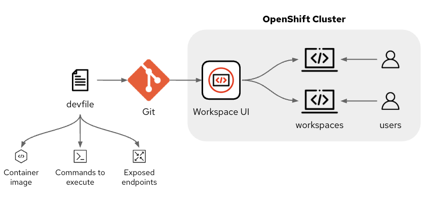

Dev Spaces Devfile
A Devfile is a YAML-based configuration file used to describe and manage development environments. Originally introduced as part of the Eclipse Che and OpenShift development ecosystems, it has since gained broader adoption.
Devfiles help streamline development by providing a consistent, automated, and cloud-native approach to setting up and managing development environments. This makes it particularly beneficial for teams working on modern, distributed, and containerized applications.
A Devfile defines the dependencies, tools, and configurations required for a developer to build, test, and run applications consistently across different platforms. It is mainly used in cloud-native development environments, especially in Kubernetes and OpenShift-based platforms.

The Devfile function can be grouped into the three main categories shown above.
-
References to container images that have specific command line software installed such as compilers and packaging tools.
-
Commands to execute to poerform specific tasks such as compiling and packaging code using the tools mentioned above.
-
Endpoints that are exposed for other microservices and API based solutions to use to interact with the code under development.
Devfile structure
Below is an example devfile that has been broken up into discrete parts with an explanation of elements included before it.
schemaVersion: 2.2.0: Specifies the Devfile API version used for parsing this file.
attributes: controller.devfile.io/storage-type: per-workspace: Instructs the controller to provision a dedicated Persistent Volume (PV) specifically for this workspace. Other options for storage-type are :
-
per-user : A single PVC is provisioned for all workspaces belonging to one user in a namespace.
-
per-workspace: Every individual workspace is assigned its own dedicated PVC.
-
ephemeral: Replaces all volumes with emptyDir volumes. All local changes are lost once the workspace stops.
-
async: Uses ephemeral emptyDir volumes for active work but includes a sidecar container to synchronise changes to a persistent volume.
schemaVersion: 2.2.0
attributes:
controller.devfile.io/storage-type: per-workspace
metadata:
name: che-openvsx-registryThis section defines the containers and storage that make up the workspace. The container called 'podman' is created from the image at quay.io/cgruver0/che/dev-tools:latest memoryLimit : Allocates up to 6GB of RAM to this container. mountSources : Automatically mounts your project source code into this container (usually at /projects) env : Sets environment variables (for example - VS Code knows which workspace file to open automatically on launch).
components:
- name: podman
container:
image: quay.io/cgruver0/che/dev-tools:latest
memoryLimit: 6Gi
mountSources: true
env:
- name: VSCODE_DEFAULT_WORKSPACE
value: "/projects/che-openvsx-registry/codeoss.code-workspace"Create a volume of 4GB persistent volume called 'projects'. Note that the VS Code default workspace is mounted to a location under /projects.
- volume:
size: 4Gi
name: projectsA second container image to be used in the workspace. This container image will run the bash command to make a directory and copy files to the directory structure when the container starts.
- name: oc-cli
container:
args:
- '-c'
- >-
mkdir -p /projects/bin && cp /usr/bin/oc /projects/bin/oc && cp /usr/bin/kubectl /projects/bin/kubectl
command:
- /bin/bash
image: image-registry.openshift-image-registry.svc:5000/openshift/cli:latestEnsure that the second container can see the shared persistent storage in /projects. This container has a small memory request and memory limit since it is only executing a series of file copy commands on startup to put content into the shared /projects location.
sourceMapping: /projects
mountSources: true
memoryRequest: 128M
memoryLimit: 256MThe commands section identifies a series of commands that will be available in the workspace. The task is called cp-oc-cli and it will trigger the oc-cli component (the file copy described above) The event 'preStart' will execute the above command as a 'hook'. The purpose is to ensure the oc and kubectl binaries are copied to the shared volume before the workspace fully starts, so they are available to you in the terminal immediately.
The sequence to use to read this information is :
preStart → calls a command → calls the component → executes the mkdir etc. commands.
commands:
- apply:
component: oc-cli
label: Copy OpenShift CLI
id: cp-oc-cli
events:
preStart:
- cp-oc-cliA full description of the extensive devfile schema is included at this location.
Storing devfiles
Devfiles, that define a Dev Spaces workspace can be stored in a number of different locations.
Devfile registry
A Devfile Registry is a central repository or catalog that stores a collection of predefined Devfiles. These devfiles can be used by developers to quickly create and configure consistent development environments for various applications, frameworks, and programming languages.
The registry is often hosted as a service, which can be publicly accessible or private (self-hosted). The registry server provides access to the available devfiles and facilitates their discovery and retrieval.
An example of a publicly accessible and widely used devfile registry is https://registry.devfile.io. It offers a variety of predefined devfiles for languages like Python, Java, Node.js, Quarkus, and more.
A number of sample Devfiles for Dev Spaces are available at https://github.com/devspaces-samples. You can explore and customize these samples to your needs.
|
It is not anticipated that any security conscious customers will allow general access to external public devfile repositories. Such repositories may be useful for authorised individuals to use as a source of useful content that can be added to devfiles built for use within the organisation. |
|
You can create and run your own customized devfile registry outside the cluster. The process to do so is outside the scope of this course. Consult the README file at https://github.com/devfile/registry for details. |
Git repository
A git repository can host a series of devfiles for different languages and frameworks, however, it is often particularly helpful to host a devfile for a specific repository inside the repository. This ensures that all members of a team need to be sent is the location of a repository such as https://github.com/marrober/pacman.git, and they will have everything they need to create a valid DevSpace for this repository.
The root of this repository contains a devfile as indicated below.

To use the above devfile it is possible to simple go to the DevSpaces web UI and paste the URL for the git repository given above. This will be dine in the next chapter.
Local machine
A devfile is simply a file that users can keep on their local machine if they wish, however for consistency of environments between developers and for ensuring that the devfile is up to date with the latest versions of container images it is best to reference devfiles from git repositories.